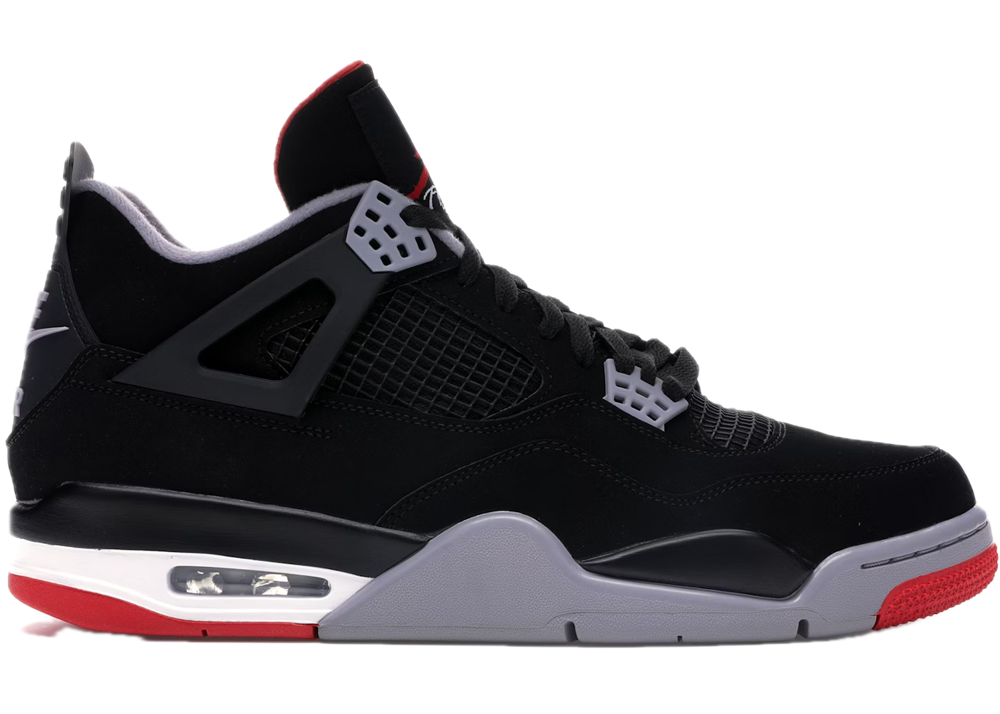

A tribute to the lineage
Chicago · 1984 — Forever
✦ Featured — Air Jordan IV "Bred"

The Evolution
The Icon
1989 · Chicago Bulls
Designed by Tinker Hatfield, the Air Jordan IV arrived in 1989 with a blueprint nobody had seen before — visible Air cushioning, aggressive support wings, and mesh netting panels that let the shoe breathe on the court and tell a story off it.
The Bred colorway — Black, Cement Grey, and Fire Red — was worn by Michael Jordan during the 1989 season, a year that would cement his legend. He wore these shoes when he willed the Bulls past the Cavaliers on a buzzer-beater that echoes still.
"The IV was the first shoe where I felt like the design was telling my story before I had to say a word."
The Family
Each number tells a chapter. Each colorway holds a memory. These are the shoes that built a universe.